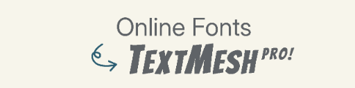
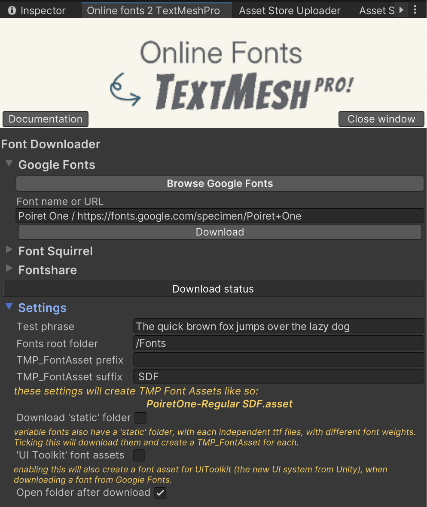

Online Fonts 2 TextMesh Pro

available on the Asset Store
Documentation
Opening the Online fonts 2 TextMesh Pro window
Under Tools, you will find Online Fonts 2 TextMesh Pro. This will open a new window.
Downloading a font
- Browse one of the font catalogs and look for a font you would like
- Either copy its name, or the URL
- Paste the name or the URL in the corresponding text field, and click the Download button
- Enjoy ! The
TMP_FontAsset(s) will be created under a folder for each font family, side by side with the original font files
Available font catalogs
if you would like another font catalog, please reach out to me (contact at antoinecherel.dev)
Demo
a demo video is available here, on YouTube.
Overview

Settings
- Test phrase: the sentence used to display fonts after downloading
- Fonts root folder: where the folders with the downloaded fonts should be located (based on the
Assets folder (ie: by default Assets/Fonts))
- TMP_FontAsset prefix: characters that should always be added before the name of the TMP_FontAsset.
- TMP_FontAsset suffix: characters that should always be added after the name of the TMP_FontAsset.
- Download 'static' folder: Variables fonts come with a .ttf file that can be varied (on supporting software). To my knowledge, TextMesh Pro doesn't support that. Beside these variable fonts, a 'static' folder is provided with more .ttf files, detailing all possible combinasions of font weights and styles. Unticking that will make it download less
- 'UI Toolkit' font assets: Unity's new UI system is UI Toolkit. Ticking this checkbox will also create
FontAsset for each downloaded fonts, and these can be used with this new UI system.
- Open folder after download: Ticking this will open the font's parent folder in your file explorer after download.
Credits
The Plugin 'Online fonts 2 TextMesh Pro' is not associated with Google nor with Unity.
The only purpose of this plugin is to make it easier to download, import and make use of Open Source fonts distributed throught Google Fonts, Font Squirrel & Fontshare.
More info on licensing on these fonts can be found here, here and here.
Unity Plugin, developped by Antoine Cherel
Arrow by Mila Yunita from Noun Project (CC BY 3.0)